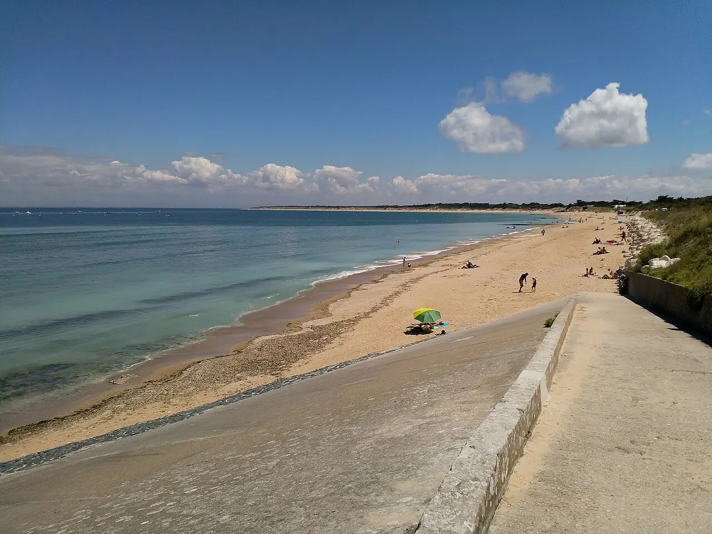

Conche des Baleines
Île de Ré, Charente-Maritime, France · baignade, surf, bodyboard

Grande plage sauvage au nord-ouest de l’île de Ré, bordée de dunes et de forêt, près du phare des Baleines. Exposée à l’océan, elle reçoit la houle et attire surfeurs et bodyboardeurs.
- Lieu
- Île de Ré, Charente-Maritime, France
- Niveau
- Intermédiaire
- Activités
- baignade, surf, bodyboard
- Type d'eau
- Mer / océan
- Coordonnées
- 46.25, -1.53 (position approximative du secteur)
Dangers à connaître
- Courants d’arrachement quand la houle rentre.
- Platier rocheux vers le phare à marée basse.
Le conseil d'Ocean Buddy
Baigne-toi dans la zone surveillée en été et évite les abords rocheux du phare à marée basse.
Ouvrir dans Ocean Buddy Télécharger sur l'App Store
Source : Fiche Ocean Buddy · septembre 2026 · à vérifier localement.